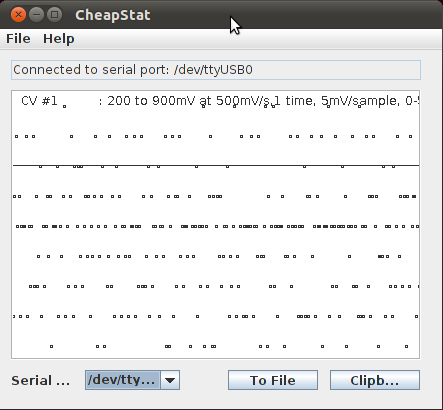
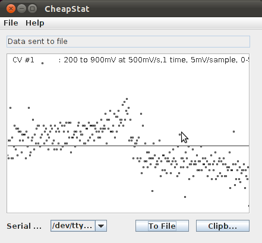
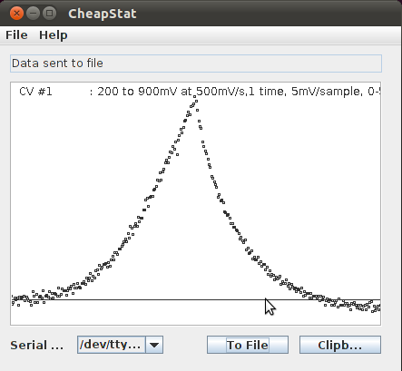

Viewing and saving data in the CheapStat GUI¶
- Download the CheapStat software from here: http://web.chem.ucsb.edu/~kwp/cheapstat/
- Requires Java which you can download from here: https://www.java.com/en/
- Launch the CheapStat GUI by double-clicking on the CheapStat_111810.jar file in the ‘gui’ subfolder.
- Select the device from the drop-down menu
- Start a measurement as described in the CheapStat Quick Start section.
- Save data by clicking on “To File”
Below are some examples of cyclic voltammetry data.
No electrodes connected¶

Background CV measurement (0.1M KCl)¶

Experimental CV measurement (orange juice)¶
